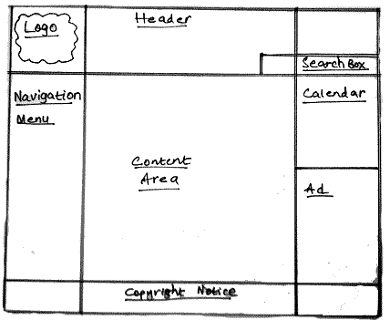

Запись 1
Первая неделя: вроде как все успеваю?
Несмотря на то, что я пошел немногь вперед и решил отдельно закреплять все на своем рабочем домене, я пока все задуманное успевваю, хотя хочется больше, конечно же. Успокаиваю себя тем, что надо просто войти в правильный ритм и все пойдет дальше в каком-то потоке.

На этой странице я потренировался собирать что-то напоминающее заметку в блоге: тут есть номер записи, заголовок уровня <h1> (кстати вот так написать тег, чтобы он не прочитался браузером тоже пришлось подумать как сделать), есть даже панель навигации с возвратом на главную страницу. Чуть позже сделаю еще подпись автора, но не сегодня.
29 августа, 2021 года.